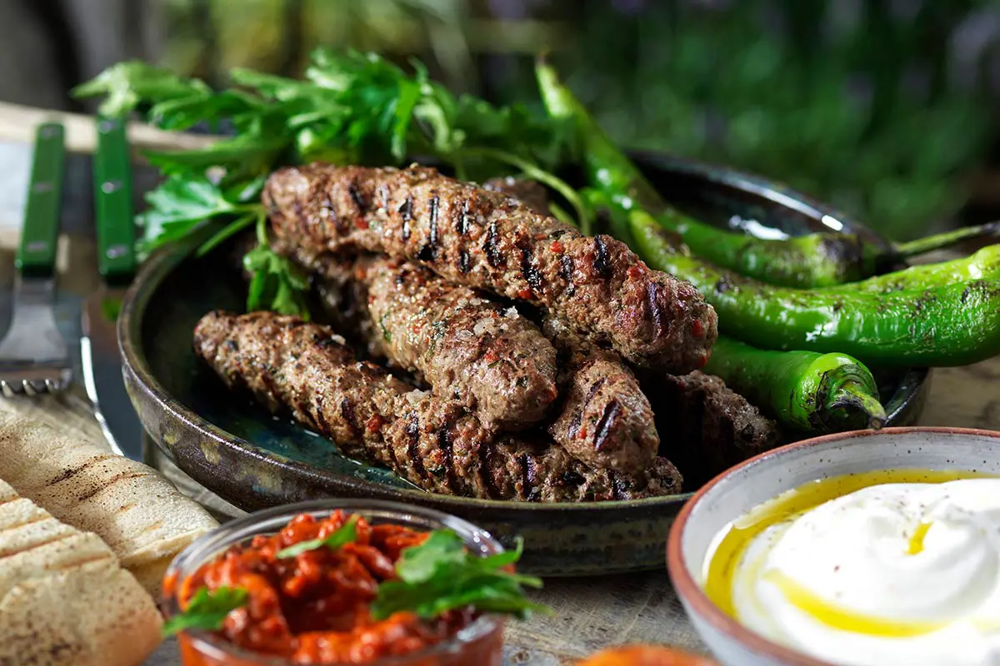
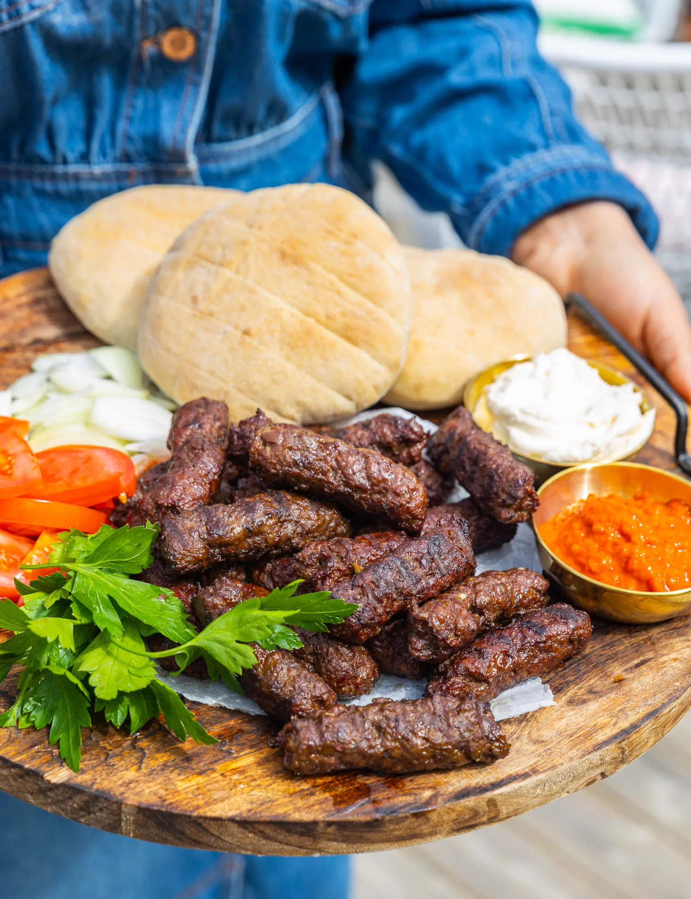
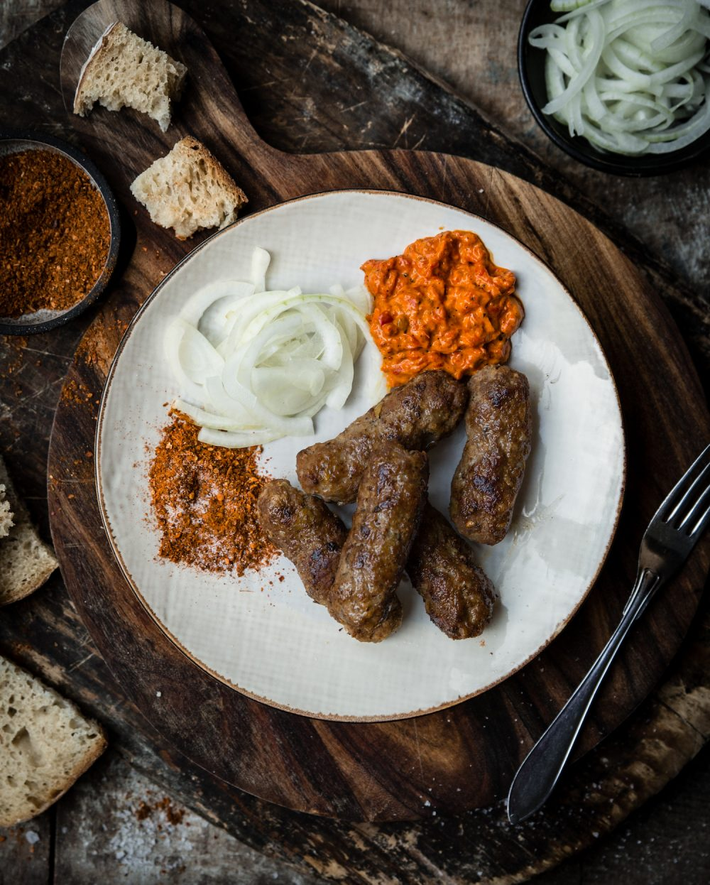

Saftiga och smakrika Cevapcici
Ett smakrikt recept från Balkan – perfekt för grillen eller stekpannan!
Ingredienser
(4 port)
500 g blandfärs
1 liten gul lök (finhackad)
2 vitlöksklyftor (pressade)
1 tsk paprikapulver
1 tsk salt
0,5 tsk svartpeppar
1 tsk bikarbonat
0,5 dl kolsyrat vatten
Så här gör du
Blanda alla ingredienser noga i en skål.
Forma små avlånga biffar (cevapcici-form).
Låt stå i kylen i minst 30 minuter.
Grilla eller stek på medelhög värme tills de är genomstekta.
Servera med ajvar, bröd och sallad.
Serveringsförslag
 